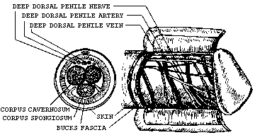
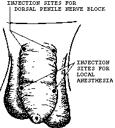
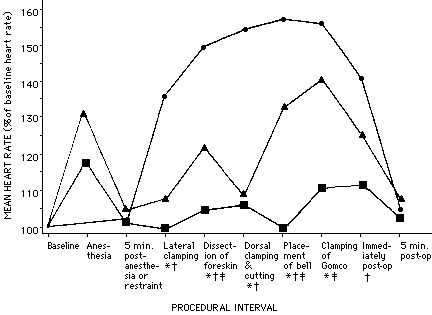
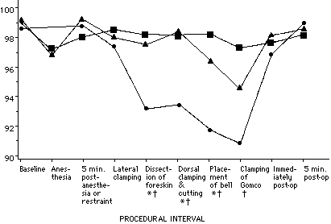
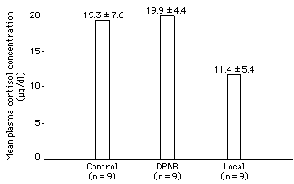

Anesthesia for Neonatal Circumcision:
Local Anesthesia is Better Than Dorsal Penile Nerve BlockAnthony L. Masciello, MD
Several studies document the benefit of dorsal penile nerve block for neonatal circumcision, but the literature does not address the use of local anesthesia. A randomized, controlled, prospective study was conducted to compare the efficacy of dorsal penile nerve block versus local anesthesia. Thirty infants were randomly divided into three equal groups (N = 10): an unanesthetized control group, a group given dorsal penile nerve block, and a group given local anesthesia. Heart rate, transcutaneous oxygen saturation, and crying were monitored continuously before, during, and after circumcision. During circumcision, both the dorsal penile nerve block group and the local-anesthesia group demonstrated smaller increases in heart rate, smaller drops in oxygen saturation, and less crying compared with unanesthetized controls (P < .05). Both techniques worked well in anesthetizing the dorsal aspect of the penis; however, during those steps of circumcision involving trauma to the ventral aspect of the penis, the local-anesthesia group demonstrated smaller increases in heart rate and less crying compared with infants given dorsal penile nerve block (P < .05). Cortisol levels measured 30 minutes postoperatively were lower in the local-anesthesia group than in either the controls or the dorsal penile nerve block group (P < .05). Dorsal penile nerve block had no effect on postoperative cortisol levels. No complications occurred. Although both types of anesthesia attenuated the physiologic responses to circumcision, local anesthesia demonstrated greater efficacy than dorsal penile nerve block while being simpler to perform.(Obstet Gynecol 75:834, 1990)
Clearly, the newborn experiences pain during circumcision. The neural pathways that relay painful stimuli, the cortical and subcortical centers that perceive pain, and the required neurotransmitters are all present and functional before birth [1]. Neonatal circumcision produces increases in heart rate, blood pressure, and plasma cortisol levels and decreases in the transcutaneous partial pressure of oxygen [1], [2]. The pain of neonatal circumcision has been correlated to changes in crying patterns evaluated by objective methods (spectrographic and computer-based analysis) and by subjective interpretation [3]. Increased wakefulness and irritability are present the first hour after circumcision [4], and behavior is altered for more than 22 hours afterward. Use of anesthesia eliminates these behavioral changes. During the first 2 postoperative days, the anesthetized infants are more attentive, have better motor responses, are less irritable, and are more capable of quieting themselves when disturbed. These behavioral changes imply that neonatal pain is more than just a reflex response [1].
In 1978, Kirya and Werthmann [5] introduced the technique of dorsal penile nerve block for newborn circumcision. The paired dorsal penile nerves lie in the Buck fascia at the 10- and 2-o'clock positions. The nerves ramify 1 cm distal to the root of the penis. Also within the Buck fascia, the dorsal penile arteries lie just medial to the nerves, and in the midline is the deep dorsal penile vein. The superficial penile vein is located in the midline above the fascia (Figure 1). To perform dorsal penile nerve block, the penile root is identified and a 26-gauge needle is inserted 0.5 cm distal to the root at the 10- and 2-o'clock positions (Figure 2). The needle is advanced posteromedially to a depth of no more than 0.25-0.5 cm, and 0.2-0.4 mL of 1% lidocaine without epinephrine is injected bilaterally into the subcutaneous tissue. Before infiltration, it is imperative to aspirate in order to prevent accidental intravascular injection [5].
  Figure 1. Anatomy of the penis. Figure 2. Location of injection sites for dorsal penile nerve block and local anesthesia. Several studies have documented the effectiveness of dorsal penile nerve block by parameters such as crying, heart rate, respiratory rate, transcutaneous oxygen saturation, plasma cortisol levels, and subjective analysis [6-9]. The literature does not address the use of simple local infiltration for neonatal circumcision. This study was undertaken to compare the efficacy of dorsal penile nerve block and local anesthesia by objective parameters: heart rate, transcutaneous oxygen saturation, the presence or absence of crying, and postoperative plasma cortisol levels.
Materials and Methods
All healthy male newborns with no contraindication to circumcision were eligible candidates. Approval for this study was obtained from the Institutional Review Board of the University of Florida Health Science Center, Jacksonville. Informed written consent was obtained from the infant's mother. No additional charges were incurred by entry into the study. A total of 30 infants were randomly assigned to three groups (N = 10): an unanesthetized control group, a group given dorsal penile nerve block, and a local-anesthesia group. All three groups were comparable with regard to birth weight (3433 +- 526 g), race (57% white, 43% black), gestational age by Dubowitz score (39.6 +- 1.4 weeks), baseline heart rate (126 +- 14 beats per minute), and baseline transcutaneous oxygen saturation (99 +- l%). The mean age for the local-anesthesia group (1.9 +- 0.3 days) was older than that for the controls (1.3 +- 0.5 days) (P < .05). The mean age for the dorsal penile nerve block group (1.5 +- 0.5 days) was similar to that of the other two groups.
All infants were fasting for at least 3 hours before circumcision. The infants were brought to a quiet room, strapped to a circumcision board (Circumstraint), and wrapped in warm sheets. A cardiac monitor and a pulse oximeter (Nellcor, Hayward, CA) were applied for continuous monitoring. The infant was not disturbed for at least 2 minutes in order to obtain stable baseline measurements. All anesthetic procedures and circumcisions were performed in an identical manner between 7 and 11 AM by the principal investigator. Dorsal penile nerve block was administered as described by Kirya and Werthmann [5]. Using a 26-gauge tuberculin syringe, 0.4 ml of 1% lidocaine without epinephrine was injected on either side at the 10- and 2-o'clock positions at the base of the penis. Local anesthesia was performed by injecting 0.4 ml of 1% lidocaine without epinephrine subcutaneously into the foreskin at both the 10- and 2-o'clock positions at the level of the corona (Figure 2). Circumcision was postponed until 5 minutes after anesthesia. The Gomco clamp (1. 1 cm) was used for circumcision. Heart rate, transcutaneous oxygen saturation, and crying were recorded for the following intervals: during administration of anesthesia, 5 minutes after administration of anesthesia (5 minutes after restraint for the controls), during each step of circumcision (lateral clamping, blunt dissection of the foreskin from the glans, dorsal clamping and cutting, placement of the bell, and clamping of the Gomco), immediately after circumcision, and 5 minutes after circumcision. For each step, the heart rate recorded was the peak heart rate sustained during or immediately after that step. Oxygen saturation was recorded as the nadir sustained during or immediately after each interval. Crying was recorded as present or absent. Crying was defined to be present if any degree of crying occurred during or after the procedural interval. Infants were observed for 30 minutes postoperatively, at which time blood was drawn via heel-stick for plasma cortisol measurement. The samples were promptly centrifuged and the plasma was frozen (-20C). Because of improper handling cortisol levels were not obtainable for the first three infants; this reduced the sample size to nine for each group. Cortisol levels were measured by Fluorescence Polarization Immunoassay (Abbott Laboratories TDx Analyzer, Chicago, IL). This method has a sensitivity of 0.45 mg/dL. The inter-assay and intra-assay coefficients of variation are less than 9% with this method.
The data for heart rate, oxygen saturation, and cortisol levels were statistically analyzed using Student t test, with alpha levels adjusted to control for multiple comparisons using the Bonferroni procedure. The data for crying were analyzed by the <chi>2 [Transcriber's note: <chi>-squared] test using the Bonferroni procedure to control for multiple comparisons. Differences were considered significant at P < .05. Values are expressed as the mean +- SD.
Results
Administration of both forms of anesthesia immediately caused a moderate increase in heart rate, a slight drop in oxygen saturation, and crying in most of the infants. The degree of these responses was similar for both dorsal penile nerve block and local anesthesia (P > .05). Five minutes after anesthesia, these parameters returned to baseline values.
Throughout the circumcision, the control group demonstrated marked increases in heart rate. The group given dorsal penile nerve block had smaller increases in heart rate compared with the control group during the first four steps of circumcision (P < .05). The local-anesthesia group showed little change in heart rate compared with controls during every step of circumcision and immediately afterward (P < .05). The infants given local anesthesia had smaller increases in heart rate compared with the dorsal penile nerve block group during three procedural intervals (dissection of the foreskin, placement of the bell, and clamping of the Gomco) (P < .05). All three groups returned to baseline heart rate values 5 minutes after the procedure (Figure 3).
 Figure 3. Mean heart rate expressed as a percent of baseline heart rate. Circles = control; triangles = dorsal penile nerve block; squares = local anesthesia.
* Dorsal penile nerve block and control differ significantly (P < .05).
<dagger>: Local anesthesia and control differ significantly (P < .05).
<double dagger>: Local anesthesia and dorsal penile nerve block differ significantly (P < .05).Oxygen saturation dropped progressively in the unanesthetized controls as they were being circumcised. Crying and increased intrathoracic pressure are believed to cause the desaturation. For the first step of circumcision (lateral clamping), no differences in oxygen saturation were noted among the three groups. The dorsal penile nerve block group had a higher mean oxygen saturation compared with the control group during the next three steps (P < .05). The local-anesthesia group maintained oxygen saturation levels in comparison with the controls during each of the last four steps of circumcision (P < .05). Immediately after and 5 minutes after circumcision, oxygen saturation was similar for all three groups (Figure 4).
 Figure 4. Mean transcutaneous oxygen saturation. Circles = control; triangles = dorsal penile nerve block; squares = local anesthesia.
* Dorsal penile nerve block and control differ significantly (P < .05).
<dagger>: Local anesthesia and control differ significantly (P < .05)Every unanesthetized infant cried during every step of circumcision. During dorsal clamping and cutting and immediately post-circumcision, there were fewer infants crying in the group given dorsal penile nerve block than in the control group (P < .05). The local-anesthesia group had four infants (40%) who did not cry at any time during or after circumcision, in contrast to the control and dorsal penile nerve block groups, in which every infant cried during part or all of the procedure (P < .05). For each step of circumcision, there were fewer infants crying in the local-anesthesia group than in the control group (P < .05). Compared with the dorsal penile nerve block group, there were fewer infants crying in the local-anesthesia group during three procedural intervals: lateral clamping, placement of the bell, and clamping of the Gomco (P < .05) (Table 1).
Table 1. Number of Infants Crying During Circumcision According to Anesthesia Group
Control
(N = 10)DPNB
(N = 10)Local
(N = 10)
Baseline 1 0 1 Anesthesia 10 8 5 min post-anesthesia or post-restraint 1 0 0 Lateral clamping [*][**] 10 6 0 Dissection of foreskin [*] 10 7 4 Dorsal clamping and cutting [*][***] 10 1 3 Placement of Bell [*][**] 10 8 2 Clamping of Gomco [*][**] 10 9 2 Immediately post-circumcision [***] 8 2 3 5 min post-circumcision 0 0 0
DPNB = dorsal penile nerve block.
[*] Local anesthesia and control differ significantly (P < .05).
[**] Local anesthesia and dorsal penile nerve block differ significantly (P < .05).
[***] Dorsal penile nerve block and control differ significantly (P < .05).
[Transcriber's note: [**] and [***] indicate the dagger and double-dagger symbols in the original text.]
The mean plasma cortisol levels 30 minutes post- circumcision were similar in the control group (19.3 +- 7.6 mg/dL) and the group given dorsal penile nerve block (19.9 +- 4.4 mg/dL). Lower cortisol levels were noted in the infants given local anesthesia (11.45 +- 5.4 mg/dL) compared with the control and the dorsal penile nerve block groups (P < .05) (Figure 5).
 Figure 5. Mean plasma cortisol levels 30 minutes after circumcision. Lower levels are noted in the local-anesthesia group as compared with unanesthetized controls or infants given dorsal penile nerve block (DPNB) (P < .05). The time necessary to complete the circumcisions was similar for all groups (7 +- 2 minutes). No complications of any type occurred in any of the infants studied.
Discussion
In 1987, the American Academy of Pediatrics stated that anesthesia should not be withheld from neonates solely because of the infant's age or perceived degree of cortical maturity [10]. Physicians still may be reluctant to use anesthesia for the circumcision of newborns because of concerns regarding efficacy and safety. Numerous studies have described the benefits of dorsal penile nerve block [5-9], [11], but no alternatives to regional block are described in the literature.
The unanesthetized infants demonstrated marked physiologic responses to circumcision: crying, tachycardia, lowered oxygen saturations, and elevated cortisol levels. Both dorsal penile nerve block and local anesthesia modified these changes. As in previous studies, dorsal penile nerve block blunted changes in heart rate, oxygen saturation, and crying [6-9]. Postoperative cortisol levels were similar in the dorsal penile nerve block group (19.9 +- 4.4 mg/dL) and the control group (19.3 +- 7.6 mg/dL). Williamson and Evans [12] also found that dorsal penile nerve block had no effect on cortisol levels 30 minutes post-circumcision: Unanesthetized infants and infants given dorsal penile nerve block had identical levels (22.9 mg/dL). In a similar study, Stang et al [9] showed lower cortisol levels 30 minutes postoperatively in infants given dorsal penile nerve block (14.0 mg/dL) than in infants given a saline injection (19.3 mg/dL), but again no difference was noted between infants given dorsal penile nerve block and unanesthetized controls (16.7 mg/dL). Stang's group demonstrated lower cortisol levels 90 minutes after circumcision in infants given dorsal penile nerve block compared with unanesthetized controls, but at this point there was no longer a difference between those given dorsal penile nerve block and those given saline.
In this study, infants given local anesthesia had lower plasma cortisol levels 30 minutes after circumcision (11.4 +- 5.4 mg/dL) compared with both the control group and the group given dorsal penile nerve block (P < .05). The local-anesthesia group was older (1.9 +- 0.3 days) than the control group (1.3 +- 0.5 days). It was postulated that this might have influenced the cortisol data; however, when this parameter was analyzed independently, it was found to have no effect on cortisol levels.
Local anesthesia prevented crying and tachycardia more consistently than dorsal penile nerve block during those steps of circumcision involving ventral trauma. This suggests that dorsal penile nerve block was less effective at anesthetizing the ventral aspect of the penis. Incomplete anesthesia may have been a result of technical difficulty in performing dorsal penile nerve block. Deeper injection into the Buck fascia may have produced a better block; however, because of the proximity of the dorsal vessels, bleeding complications would have been more likely to occur.
In reviewing the literature on dorsal penile nerve block for neonates, I have found only two minor complications: bleeding and hematoma, both secondary to penetration of the superficial penile vein [5], [6]. Sara and Lowry [13] have reported two cases of gangrene of the glans following circumcision using dorsal penile nerve block in a 13-month-old and a 3-year-old. The authors postulated that trauma to the dorsal vessels caused bleeding into the restricted space between the Buck fascia and the corpora cavernosa, resulting in tamponade of the dorsal arteries and subsequent ischemia. Using the local-anesthesia technique, the anesthetic is injected away from any major vessels and consequently would be less likely to result in bleeding or intravascular injection. The amount of lidocaine necessary to anesthetize the newborn penis has been shown to be well below toxic levels [8], [12].
Though both dorsal penile nerve block and local anesthesia are capable of attenuating the physiologic responses to circumcision, local anesthesia was more effective at preventing crying, tachycardia, and release of cortisol by the adrenals. Local anesthesia is also a simpler technique and is theoretically less likely to result in serious complications.
References
- Anand KJS, Hickey PR. Pain and its effects in the human neonate and fetus. N Engl J Med 1987;317:1321-9.
- Talbert LM, Kraybill EN, Potter HD. Adrenal cortical response to circumcision in the neonate. Obstet Gynecol 1976;48:208-10.
- Porter FL, Miller RH, Marshall RE. Neonatal pain cries: Effect of circumcision on acoustic features and perceived urgency. Child Dev 1986;57:790-802.
- Anders TF, Chalemian RJ. The effects of circumcision on sleep-wake states in human neonates. Psychosom Med 1974;36:174-9.
- Kirya C, Werthmann MW. Neonatal circumcision and dorsal penile nerve block - a painless procedure. J Pediatr 1978;92:998-1000.
- Holve RL, Bromberger PJ, Groveman HD, Klauber MR, Dixon SD, Snyder JM. Regional anesthesia during newborn circumcision. Clin Pediatr (Phila) 1983;22:813-8.
- Williamson PS, Williamson ML. Physiologic stress reduction by a local anesthetic during newborn circumcision. Pediatrics 1983;71:36-40.
- Maxwell LG, Yaster M, Wetzel RC, Niebyl JR. Penile nerve block for newborn circumcision. Obstet Gynecol 1987;70:415-9.
- Stang HJ, Gunnar MR, Snellman L, Condon LM, Kestenbaum R. Local anesthesia for neonatal circumcision - effects on distress and cortisol response. JAMA 1988;259:1507-11.
- American Academy of Pediatrics. Neonatal anesthesia. Pediatrics 1987;80:446.
- Poma PA. Painless neonatal circumcision. Int J Gynaecol Obstet 1980;18:308-9.
- Williamson PS, Evans ND. Neonatal cortisol response to circumcision with anesthesia. Clin Pediatr (Phila) 1986;25:412-5.
- Sara CA, Lowry CJ. A complication of circumcision and dorsal nerve block of the penis. Anaesth Intensive Care 1985;13:79-85.
From the University of Florida Health Science Center - Jacksonville, Jacksonville, Florida. The author is grateful to Abbott Laboratories for providing kits for Cortisol determinations at no charge.Address reprint requests to:
Anthony L. Masciello, MD
Department of Obstetrics and Gynecology
University of Florida Health Science Center-Jacksonville
580 West Eighth Street
Jacksonville, FL 32209
Received June 26, 1989.
Received in revised form November 14, 1989.
Accepted November 16, 1989.Copyright © 1990 by The American College of Obstetricians and Gynecologists.
http://www.cirp.org/library/pain/masciello/